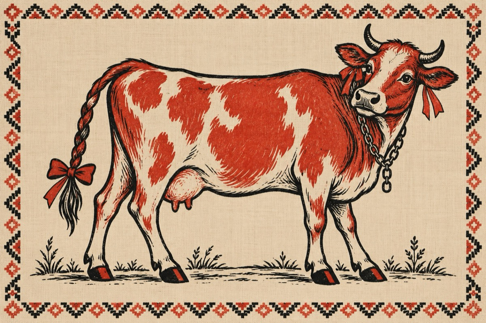

Joiana
Mă numesc Joiana
Sunt o blondă roșcată, liberă de contract
Vaca, adica mama mă desmeardă ZÂNA
Știu eu după ce dicționar s-o fi luat?
Oricum, nu e nimeni ca mine în sat!
Am plecat din compania unor boi,
Ce-i drept, am avut o relație cu un taur, sau doi!...
Dar sunt o tipă modernă, totdeauna la modă,
sper să-mi dați dreptate!
Am copitele despicate
Vopsite în culori separate
Nu port șosete, dară
Îmi place la pielea goală
Coada împletită, la vârf cu o fundiță
La gât un lanț cu zale și la urechi roșii bentițe
Mi-am pus și BOTUX, dintr-un spine de cactus.
Mai nou, boul cu care am fost până acum
Colegă de jug, dar numai atât
Alte relații, nicicum!
Fiindcă era un bou „desăvârșit”! Depășit!
Prost pregătit!
Care până la urmă, din lipsă de dialog, m-a părăsit!
Motivând că nu trag bine la jug
Mă rog, la plug!
Și că nu sunt așa cum s-a așteptat, un tezaur
Cu toate că arătura pe care o făceam, dădea belșug.
Și colac peste pupăză, nu i-a convenit că m-a avut un taur!
Frumos și zdravăn și care nu trăgea la jug.
Și că după relația cu el, am rămas cu-n vițel.
ZÂNA, mi-a zis mama vacă
Du-te în lume nu te da bătură
Vițelul, lasă-l la mine să crească
Și așa am ajuns din nou să fiu vândută!
Ați reținut, pentru că sunt și cultă, am un contract nou!
Într-o cireadă de vaci staruri
Adică, dau lapte mereu!...
Și sunt curtată din nou de cine, de un bou!
Dar sunt fericită că sunt mulți tauri
Fericită pe de o parte și tristă în rest
Un lucru mă deranjează așa ca un fapt, ca un gest
Întreg anul sunt trasă de țâțe de trei ori pe zi,
Și-odată pe an dusă la taurul comunal
Ce fericire, aceasta poate fi?...
Vasile Groza